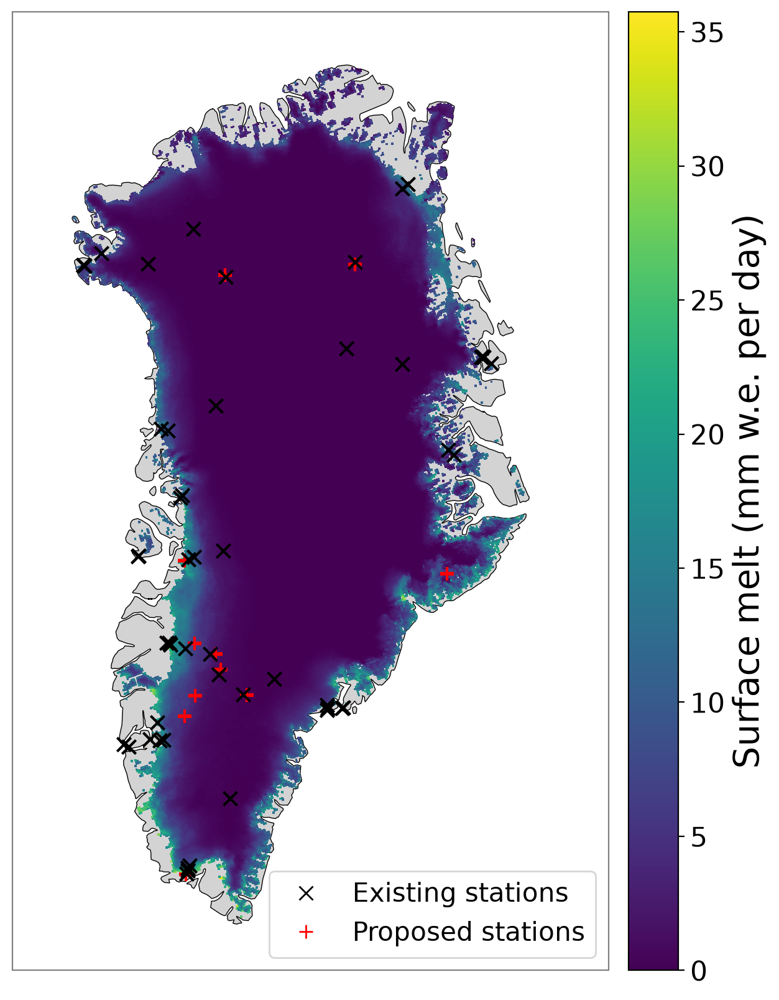

GIANT-sp is a tool to aid optimal sensor placement for monitoring climate tipping points.
The challenge: surface melt as a proof of concept
The Greenland Ice Sheet is one of the climate system's key tipping elements. We use surface melt prediction as a proof-of-concept challenge.
Tipping-relevant
Surface melt drives a large share of Greenland's mass loss and the melt–elevation feedback, so better melt monitoring feeds directly into tracking the tipping point.
Testable
Outputs of regional climate models (RCM) are treated as "truth" to score against, alongside locations of long-term stations. This lets us measure how much each proposed sensor actually helps.
Transferable
Nothing in the method is specific to melt. The same model and search can be retargeted to other variables and tipping elements once the approach is proven here.
